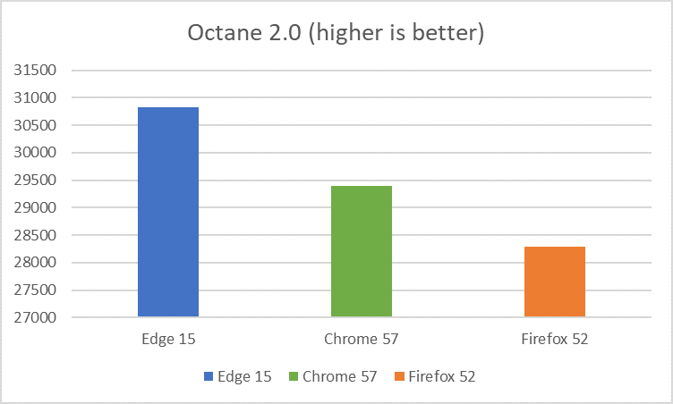

Browser performance comparison - JavaScript Benchmarks
Windows 10 Creators Update
Methodology summary
The Microsoft Edge team ran the Google Octane 2.0 and Apple Jetstream 1.1 benchmarks on the latest versions of Microsoft Edge, Google Chrome, and Mozilla Firefox as of 3/28/2017: Microsoft Edge 15.15063, Google Chrome 57.0.2987.110, and Mozilla Firefox 52.0.1.
For all three browsers, the test was performed on the same desktop PC running Windows 10 Creators Update (build 15063) and connected to the Internet through Ethernet.
Results
Microsoft Edge scored 5% faster than Google Chrome and 9% faster than Mozilla Firefox according to the Google Octane 2.0 benchmark.
Microsoft Edge scored 27% faster than Google Chrome and 51% faster than Mozilla Firefox according to the Apple Jetstream 1.1 benchmark.

| Octane 2.0 score | Jetstream 1.1 score | |
| Firefox 52 (64-bit) | 28286 | 140.08 |
| Chrome 57 (64-bit) | 29399 | 166.33 |
| Microsoft Edge 15 (64-bit) | 30818 | 211.68 |
Methodology details
Computer setup
The test was performed on a desktop PC running the Windows 10 Creator's Update (15063.0 release). All tests were initiated manually on identical remote machines in a test lab (OptiPlex 7010 with Intel(R) Core(TM) i5-3475S CPU @ 2.90GHz (4 CPUs), ~2.9GHz and 4GB RAM) with no other applications running. Power and internet cables were connected during the tests. Each test was run three times in each browser, with the median score reported above.
OS and browser versions
| OS | Windows 10 Pro 15063.0 |
| Microsoft Edge | Microsoft EdgeHTML 15.15063.0.0 |
| Chrome | Google Chrome 57.0.2987.110 (64-bit) |
| Firefox | Firefox 52.0.1 (64-bit) |
Hardware
| Processor | i5-3475S @ 2.90GHz (4 CPUs) |
| Memory | 4GB |